2025–2028 / Lyon, France
emlyon business school
Master in Management, Programme Grande École.
Namasthe !
Je suis Ravi Teja Shivakoti.
Appelez-moi Ravi.
Sens du business et résolution de problèmes techniques.
(01) Introduction
J’étudie le management à emlyon business school, à Lyon. Auparavant, j’ai passé plus d’un an au bureau du fondateur de GreenFortune, entre ventes, opérations et études de marché. Je viens d’un diplôme d’ingénieur en mécanique, d’où me vient la résolution de problèmes.
Voir mon parcours(02) Parcours
Expériences professionnelles
Projets académiques
(03) Outils
D’abord l’analyse business, avec derrière moi les outils de conception d’ingénieur.
2025–2028 / Lyon, France
Master in Management, Programme Grande École.
2019–2023 / Warangal, Inde
Bachelor of Technology en génie mécanique. Secrétaire adjoint du club de musique, danse et beaux-arts et du club de sport.
Déc. 2025 / Isograd
Score de 841 sur 1 000, niveau avancé. Passé au centre d’examen d’emlyon business school.
Mars 2026 / Coursera
Une spécialisation en quatre cours proposée par Knowledge Accelerators, des bases d’Excel aux tableaux de bord Power BI et à la modélisation de données.
Vérifier ↗Mars 2026 / Coursera
Un cours en ligne autorisé par IBM.
Vérifier ↗Juil. 2022 / Bangalore, Inde
Attestation de stage de la division Aircraft, pour un stage effectué pendant mon B.Tech en génie mécanique.
(04) Formation d’ingénieur
Quelques projets de CAO de mes études d’ingénieur. C’est grâce à eux que je suis à l’aise avec les équipes et les produits techniques.
Modèle 3D en CAO / 2023
Un chopper complet modélisé pièce par pièce : cadre, fourche, moteur V-twin, roues à rayons et carrosserie.
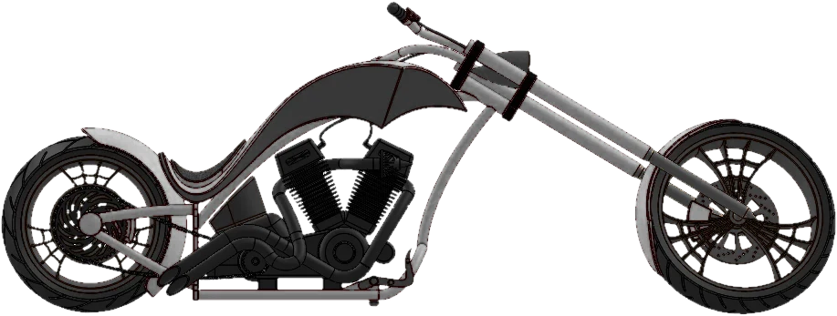
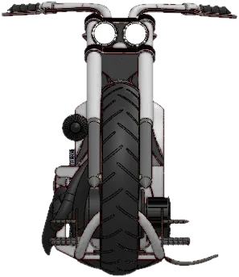
NX CAD / Panneaux de carrosserie
(01)
Panneaux intérieur et extérieur, embossages et renforts de charnière et de gâche, conçus autour de la sécurité des piétons, de la trajectoire du loquet, des données de mastic et des angles de dépouille, avec une étude du module de section.
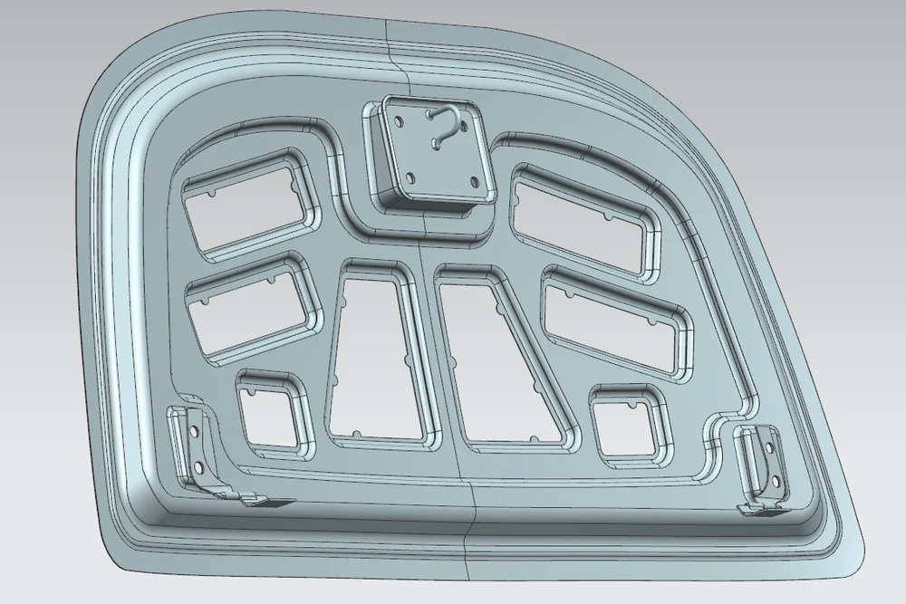
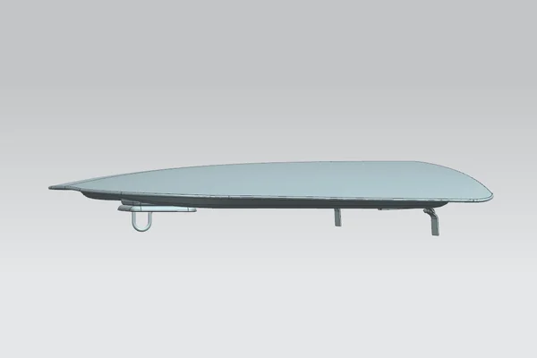
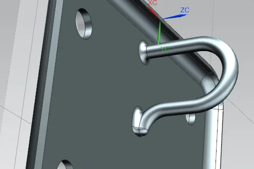
(02)
Une aile avec ses cinq fixations (caisse, bas de caisse, auvent, gouttière et montant A), conçue autour de la sécurité des piétons, de la visibilité du compartiment moteur et de la réglementation des passages de roue.
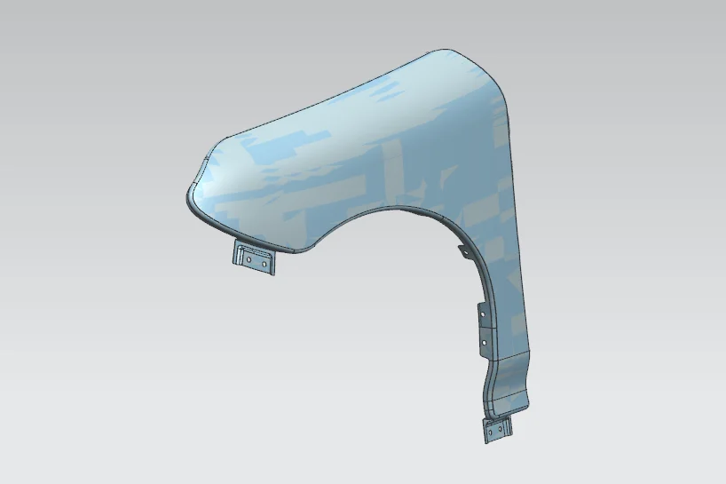
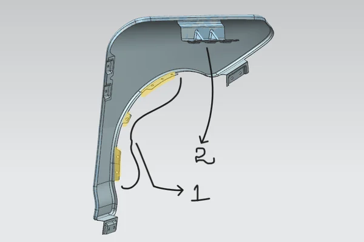
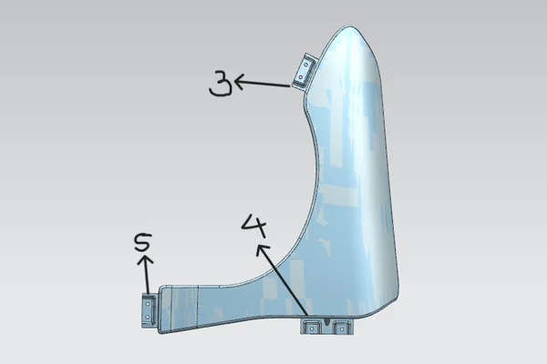
(03)
Traverses de toit avant, arrière, centrales et en arc, vérifiées avec des formules de toit en arc et de prévision de charge de neige, le moment d’inertie et une analyse des angles de dépouille.
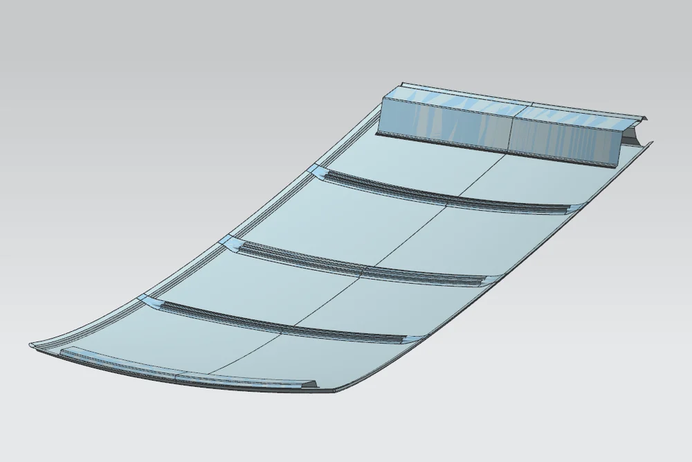
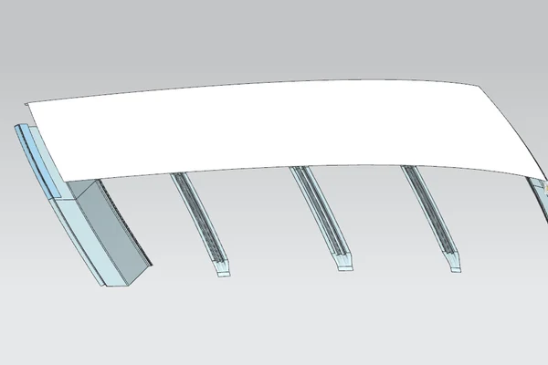
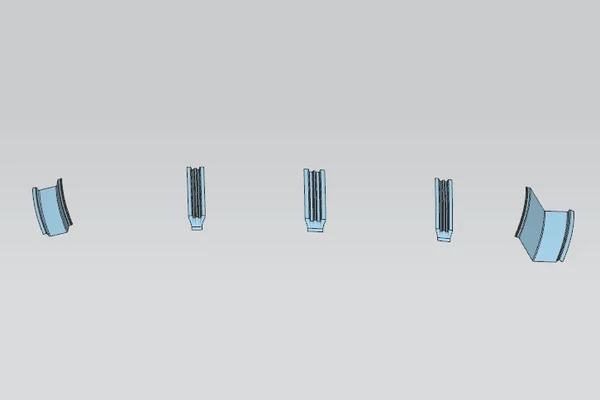
Assistant de discussion bientôt disponible.